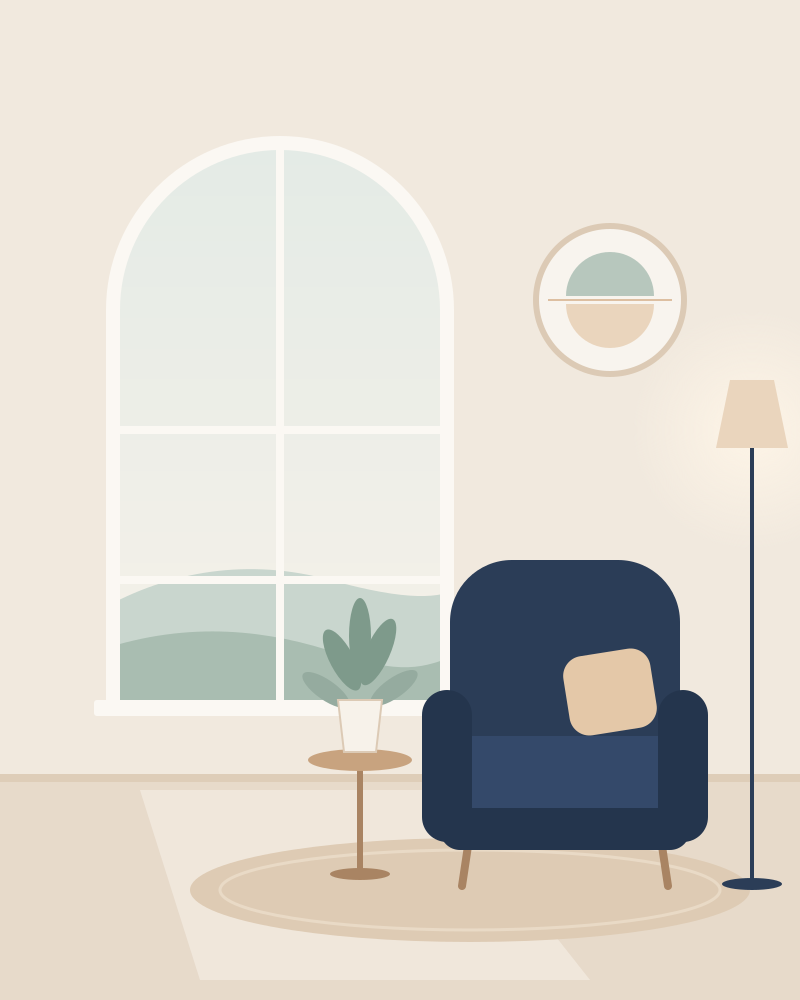
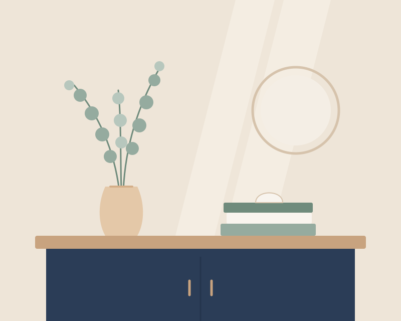
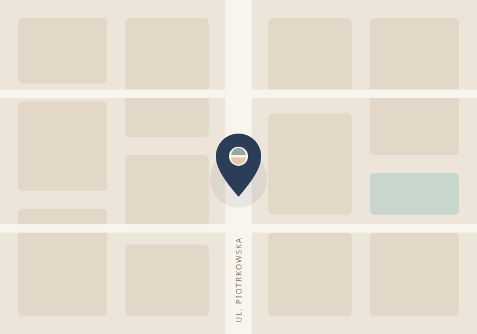

Centrum Zdrowia Psychicznego · Łódź
Zadbaj o siebie. Zacznij od rozmowy.
W BALANS tworzymy przestrzeń do spokojnej rozmowy, lepszego zrozumienia swoich potrzeb i poszukiwania odpowiedniego wsparcia. Poznaj naszych specjalistów i dowiedz się, jak wygląda pierwsza konsultacja.
- Rejestracja
- pon.–pt., 8:00–18:00godziny przykładowe
- Adres
- ul. Piotrkowska 100, Łódźadres przykładowy
- Konsultacje
- psychiatryczne i psychologiczne

W czym możemy pomóc
Trzy obszary, jedna spokojna ścieżka
Konsultacja z psychiatrą lub psychologiem to rozmowa, w której możesz spokojnie opowiedzieć o tym, co jest dla Ciebie ważne. Rejestracja pomoże zorganizować wszystko, co dzieje się wokół wizyty.
-
Konsultacje psychiatryczne
Spotkanie z lekarzem psychiatrą, podczas którego można omówić swoje samopoczucie i codzienne funkcjonowanie, a następnie wspólnie zastanowić się nad dalszymi krokami.
Lekarze psychiatrzy -
Konsultacje psychologiczne
Rozmowa z psychologiem, która pomaga przyjrzeć się swojej sytuacji, nazwać własne potrzeby i ustalić, jaka forma wsparcia może być odpowiednia.
Psycholodzy -
Rejestracja i organizacja wizyt
Rejestracja pomaga wybrać specjalistę, ustalić dogodny termin i odpowiada na pytania organizacyjne — także wtedy, gdy nie wiesz jeszcze, od czego zacząć.
Skontaktuj się z rejestracją
Pierwszy kontakt
Jak wygląda pierwszy kontakt z przychodnią
Nie musisz mieć wszystkiego przemyślanego. Wystarczy pierwszy krok — resztę ustalimy razem.
-
Wybór specjalisty
Zapoznaj się z profilami specjalistów. Jeśli nie wiesz, do kogo się zgłosić, rejestracja pomoże podjąć decyzję.
-
Kontakt z rejestracją
Zadzwoń, napisz lub wyślij zapytanie przez formularz. Nie musisz opisywać swoich objawów ani historii leczenia.
-
Ustalenie terminu
Rejestracja zaproponuje dostępne terminy i potwierdzi szczegóły wizyty. Termin jest zarezerwowany dopiero po tym potwierdzeniu.
-
Przygotowanie do konsultacji
Jeśli masz dokumentację medyczną lub listę przyjmowanych leków, warto zabrać je ze sobą. Możesz też zapisać pytania, które chcesz zadać.
Konsultacja to początek rozmowy, a nie gotowe rozwiązanie. Dalsze kroki specjalista ustala indywidualnie — wspólnie z Tobą.
Umów wizytę
O nas
Spokojnie, z szacunkiem i bez pośpiechu
Wierzymy, że rozmowa, uważność i odpowiednio dobrane wsparcie mogą być ważnym krokiem w trosce o zdrowie psychiczne.
W BALANS stawiamy na szacunek, indywidualne podejście i jasną komunikację. Chcemy, aby każda osoba odwiedzająca naszą stronę mogła spokojnie zapoznać się z ofertą i znaleźć informacje potrzebne do podjęcia kolejnego kroku.
- Indywidualne podejście do pacjenta
- Szacunek i zrozumienie
- Przejrzyste informacje o usługach
- Czytelny cennik bez ukrytych kosztów
- Pomoc rejestracji w wyborze specjalisty
- Poszanowanie prywatności
Nasi specjaliści
Poznaj osoby, z którymi porozmawiasz
Profile fikcyjne. Poniższe osoby nie istnieją i służą wyłącznie prezentacji projektu. Przed wdrożeniem placówka uzupełnia zdjęcia, opisy oraz zweryfikowane informacje o kwalifikacjach.
Psychiatria
-
Miejsce na zdjęcie Profil fikcyjnyPsychiatra
lek. Anna Zielińska
Na pierwszym spotkaniu poświęca czas na spokojną rozmowę o tym, co skłoniło do wizyty, i wspólne omówienie możliwych dalszych kroków.
Umów konsultację z lek. Anną Zielińską -
Miejsce na zdjęcie Profil fikcyjnyPsychiatra
lek. Michał Lewandowski
Stawia na jasne wyjaśnianie proponowanych rozwiązań i zostawia przestrzeń na pytania — tak, aby pacjent wiedział, czego może się spodziewać.
Umów konsultację z lek. Michałem Lewandowskim
Psychologia
-
Miejsce na zdjęcie Profil fikcyjnyPsycholog
Katarzyna Wiśniewska
Prowadzi rozmowy w spokojnym tempie, pomagając uporządkować myśli i lepiej zrozumieć własne potrzeby.
Umów konsultację z Katarzyną Wiśniewską -
Miejsce na zdjęcie Profil fikcyjnyPsycholog
Piotr Kamiński
Pomaga przyjrzeć się bieżącym trudnościom i wspólnie zastanowić się, jaka forma wsparcia może być w danej sytuacji odpowiednia.
Umów konsultację z Piotrem Kamińskim
Cennik
Jasne zasady, czytelne ceny
Koszt wizyty znasz przed jej rozpoczęciem. Jeśli nie wiesz, którą konsultację wybrać, rejestracja pomoże podjąć decyzję.
Ceny przykładowe. Wszystkie kwoty mają charakter demonstracyjny i wymagają potwierdzenia przed wykorzystaniem strony przez prawdziwą placówkę.
-
Pierwsza konsultacja psychiatryczna
Pierwsze spotkanie z lekarzem psychiatrą: rozmowa o powodach wizyty, obecnym samopoczuciu i możliwych dalszych krokach.
250 złcena przykładowa
Czas trwania: do uzupełnienia Zapytaj o termin: pierwsza konsultacja psychiatryczna -
Kolejna konsultacja psychiatryczna
Spotkanie kontynuujące współpracę z lekarzem — omówienie zmian od poprzedniej wizyty i dalszego planu.
200 złcena przykładowa
Czas trwania: do uzupełnienia Zapytaj o termin: kolejna konsultacja psychiatryczna -
Konsultacja psychologiczna
Rozmowa z psychologiem, podczas której można przyjrzeć się swojej sytuacji i ustalić odpowiednią formę wsparcia.
200 złcena przykładowa
Czas trwania: do uzupełnienia Zapytaj o termin: konsultacja psychologiczna -
Rozszerzona konsultacja psychologiczna
Dłuższe spotkanie z psychologiem dla osób, które potrzebują więcej czasu na rozmowę.
250 złcena przykładowa
Czas trwania: do uzupełnienia Zapytaj o termin: rozszerzona konsultacja psychologiczna
Historia
Jak mogłaby wyglądać droga BALANS
Oś czasu demonstracyjna. Daty i wydarzenia są fikcyjne i pokazują jedynie, jak może wyglądać ta sekcja. Marka BALANS nie działa od 2012 roku.
-
2012
Początek działalności
Przykładowy start marki: niewielki gabinet i pierwsze konsultacje psychiatryczne.
Wydarzenie fikcyjne -
2016
Rozwój konsultacji psychologicznych
Przykładowe poszerzenie oferty o konsultacje z psychologami.
Wydarzenie fikcyjne -
2020
Lepsza organizacja kontaktu
Przykładowe uporządkowanie pracy rejestracji i kanałów kontaktu z pacjentami.
Wydarzenie fikcyjne -
2026
Modernizacja oferty i rejestracji
Przykładowe odświeżenie oferty i przygotowanie nowych rozwiązań rejestracyjnych, w tym formularza zapytań.
Wydarzenie fikcyjne
Pytania i odpowiedzi
Najczęściej zadawane pytania
Nie ma tu odpowiedzi na Twoje pytanie? Rejestracja chętnie wyjaśni wszystkie kwestie organizacyjne.
Przejdź do rejestracjiJak umówić pierwszą wizytę?
Zadzwoń do rejestracji, napisz e-mail lub wyślij zapytanie przez formularz na tej stronie. Rejestracja skontaktuje się z Tobą i zaproponuje termin. Wizyta jest umówiona dopiero po potwierdzeniu przez rejestrację.
Czy mogę wybrać konkretnego specjalistę?
Tak. Możesz wskazać specjalistę w formularzu lub w rozmowie z rejestracją. Jeśli nie wiesz, kogo wybrać, rejestracja pomoże podjąć decyzję.
Ile kosztuje konsultacja?
Ceny poszczególnych konsultacji znajdziesz w cenniku. W wersji demonstracyjnej kwoty są przykładowe i wynoszą od 200 zł do 250 zł, w zależności od rodzaju wizyty.
Jak przygotować się do pierwszej wizyty?
Nie potrzebujesz specjalnego przygotowania. Jeśli masz dokumentację medyczną lub listę przyjmowanych leków, warto zabrać je ze sobą. Możesz też zapisać pytania, które chcesz zadać podczas spotkania.
Czy mogę odwołać lub zmienić termin?
Tak — skontaktuj się z rejestracją, gdy tylko będzie to możliwe. Szczegółowe zasady odwoływania i zmiany terminów: do uzupełnienia przez placówkę.
Jak skontaktować się z rejestracją?
Telefonicznie lub mailowo w godzinach pracy rejestracji (przykładowo pon.–pt., 8:00–18:00) albo przez formularz. Dane kontaktowe znajdziesz w sekcji Rejestracja.
Rejestracja
Umów wizytę
Skontaktuj się z rejestracją telefonicznie, mailowo lub wyślij zapytanie przez formularz. Nie musisz podawać informacji o swoim zdrowiu.
- Telefon
- +48 42 000 00 00numer przykładowy
- rejestracja@balans.exampleadres przykładowy
- Godziny
- poniedziałek–piątek, 8:00–18:00godziny przykładowe; w weekendy i święta rejestracja nieczynna
Jak umówić wizytę
- Wybierz specjalistę lub zaznacz, że potrzebujesz pomocy w wyborze.
- Zadzwoń, napisz albo wyślij zapytanie przez formularz.
- Rejestracja oddzwoni lub odpisze z propozycją terminu.
- Wizyta jest umówiona po potwierdzeniu terminu przez rejestrację.
Zapytanie o konsultację
Wypełnij krótki formularz, a rejestracja skontaktuje się z Tobą w sprawie terminu. Pola oznaczone jako opcjonalne możesz pominąć.
Kontakt i lokalizacja
Jak do nas trafić

BALANS — Centrum Zdrowia Psychicznego
- Adres
- ul. Piotrkowska 100
ŁódźPod tym adresem nie działa placówka BALANS. - Rejestracja
- poniedziałek–piątek, 8:00–18:00
- Telefon
- +48 42 000 00 00
- rejestracja@balans.example
Link prowadzi do przykładowego adresu w serwisie Google Maps.